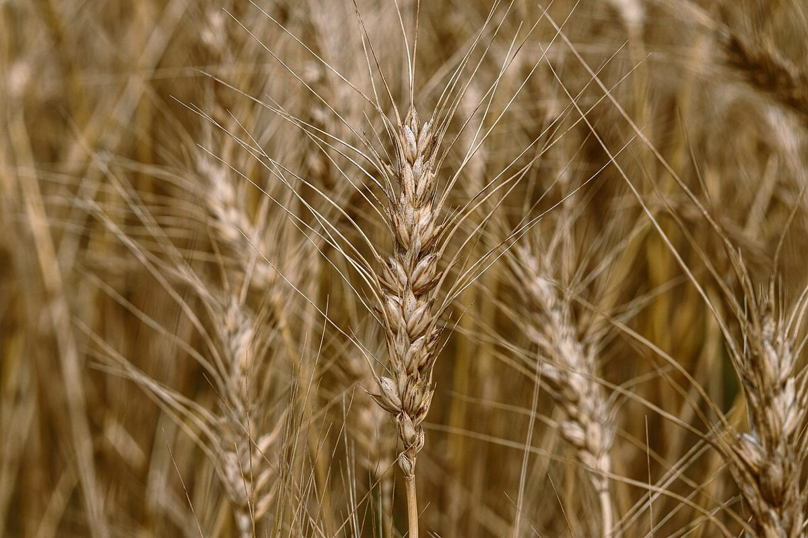

巻之二
シマムラクレープ
店のこと
お店について確認できているのは、所在地とInstagramのアカウントだけです。
このページの「想像してみる」部分は、制作側が想像して書いたものです。お店の実際の様子・考え・メニューとは関係がありません。
確認
確認できていること
- 店名は「シマムラクレープ」、業種はクレープ店(カフェ)
- 所在地は北海道斜里郡清里町羽衣町36-2(〒099-4405)
- 電話番号はなし。連絡はInstagramから
- 営業時間・定休日・メニュー・価格・ご予約・駐車場は準備中
想像
想像してみる
店名の由来は分かりません。制作側は、「クレープ」という言葉から、くるりと巻かれた薄い生地や、紙に包まれた手のひらサイズのお菓子の姿を想像しました。実際のお店の姿ではありません。
